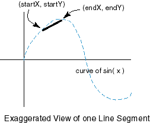

QUESTION 9:

(Debugging Practice: )
There is a problem with the code as it is so far.
Can you find it?
Hint: consider the values that sin(x) will have.
Because decimal-based floating point numbers have the same problems, but with different numbers.
For example 1.0/3.0 == 0.3333333.....33333 without end.
All floating point schemes have this problem.
Since binary has so many other advantages,
most computers use it.
Electronic calculators sometimes use hardware decimal-based
calculations since they always
present their results to humans.
Also mainframe computers usually include hardware decimal-based
instructions for use in financial calculations.
Let us graph the sine of x, for x in the range
of 0.0 to 2 PI radians.
Here is a start on doing this.
The value of PI is part of the class Math.
You get it with Math.PI.
To get accurate results,
let us use an increment of 1 over a power of two.
(If you have not read the chapters on applets,
you can skip the rest of this chapter with little loss.)
// assume that the drawing area is 600 by 400
public class sineWave extends Applet
{
public void paint ( Graphics gr )
{
double inc = 1.0/32.0;
for ( double x = 0.0; x <= 2*Math.PI; x = x + inc )
{
int startX = (int)x;
int startY = (int)Math.sin( x );
int endX = (int)x + inc;
int endY = (int)Math.sin( x+inc );
gr.drawLine( startX, startY, endX, endY );
}
}
}
The idea is that each iteration of the loop
will compute two points on the
curve sin(x) and connect them with a line.
If the separation between all the points is small,
all the straight lines will look like a curve.
The various floating point values (such as x)
are cast into int because that type is what
drawLine() expects.

(Debugging Practice: )
There is a problem with the code as it is so far.
Can you find it?
Hint: consider the values that sin(x) will have.